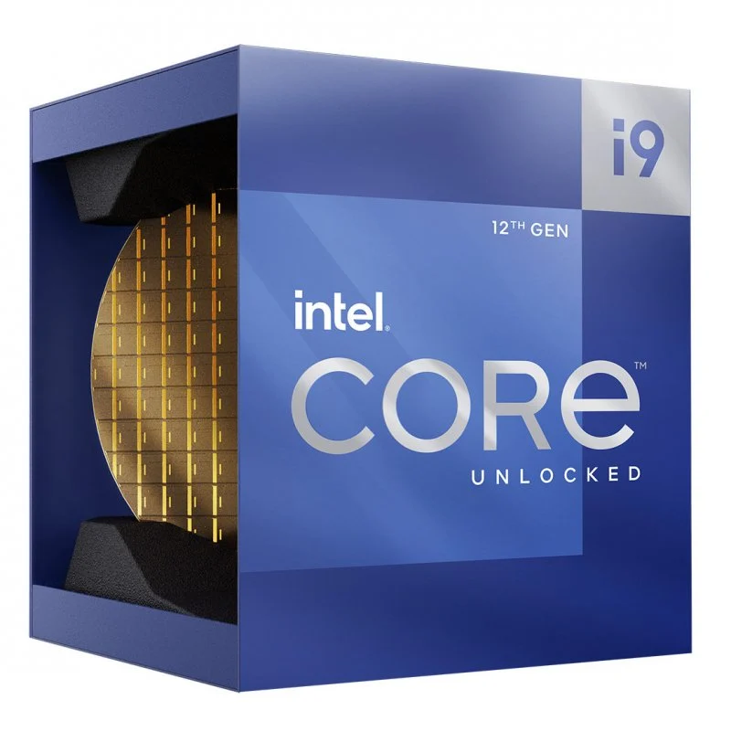
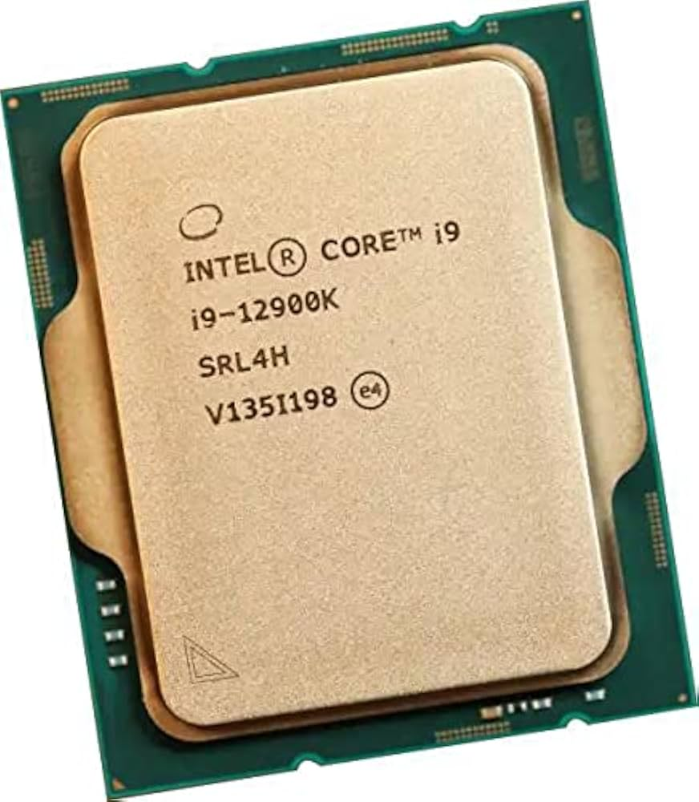
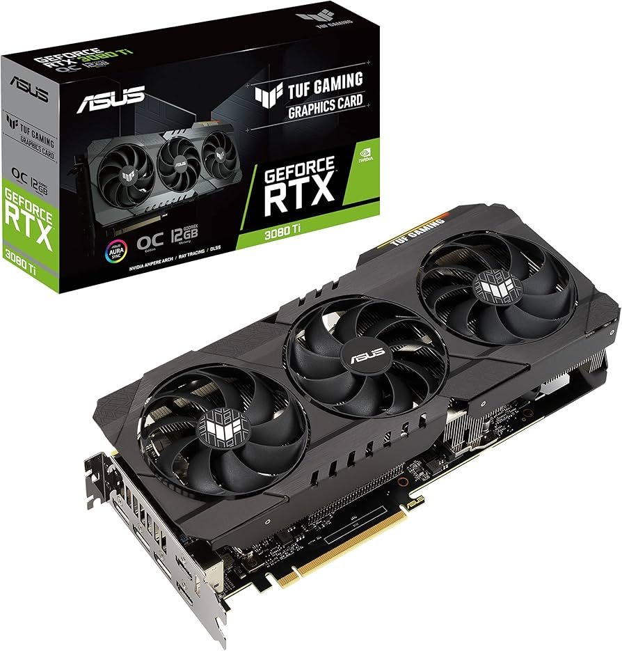
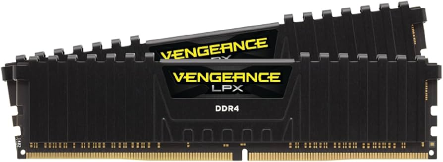
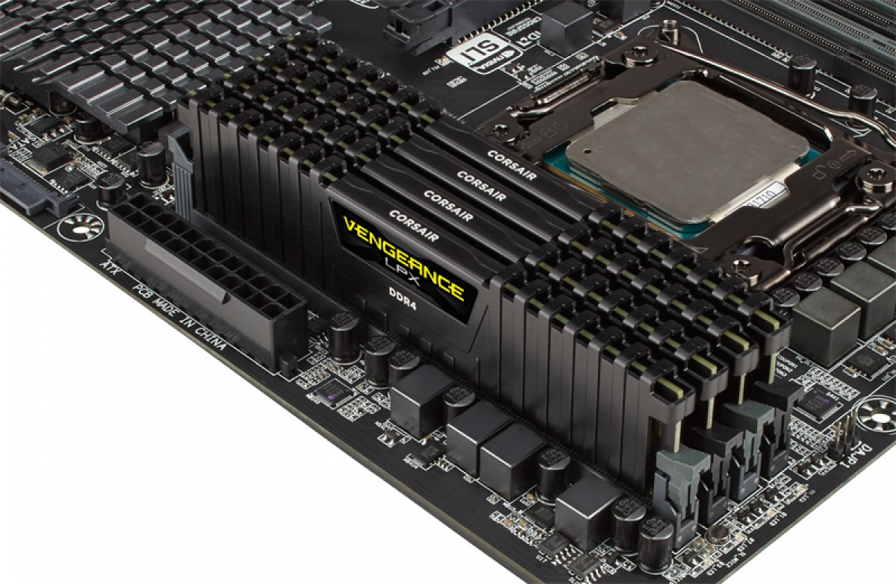

Procesador Intel Core i9-12900K
Especificaciones Técnicas
- Arquitectura: Alder Lake-S
- Litografía: Intel 7 (10nm mejorado)
- Número de Núcleos: 16 (8 Performance-cores y 8 Efficient-cores)
- Total de Hilos: 24 (Intel Hyper-Threading)
- Frecuencia Base: 3.20 GHz (Performance-cores) y 2.40 GHz (Efficient-cores)
- Frecuencia Turbo Máxima: 5.20 GHz (Performance-cores) y 3.90 GHz (Efficient-cores)
- Caché: 30 MB Intel Smart Cache
- Precio de Lista: $648.00 - $658.00
Características Destacadas
- Tecnología Intel Turbo Boost Max 3.0: Permite alcanzar frecuencias de hasta 5.20 GHz.
- Soporte para DDR4/DDR5: Compatible con memoria dual-channel hasta 128GB.
- Eficiencia Energética: Diseñado para ofrecer un rendimiento alto con un consumo de energía eficiente gracias a su arquitectura Big.Little.
Ventajas
- Rendimiento Superior: Ideal para tareas intensivas como gaming, edición de video y modelado 3D.
- Compatibilidad con Memoria DDR5: Asegura un rendimiento rápido y eficiente.
- Eficiencia Energética: Reduce el consumo de energía sin sacrificar el rendimiento.
Aplicaciones
- El Intel Core i9-12900K es perfecto para usuarios que buscan un procesador de alto rendimiento para aplicaciones que requieren mucha potencia, como juegos de alta gama, edición de video profesional y aplicaciones de inteligencia artificial.
 
Intel
Tarjeta Gráfica NVIDIA GeForce RTX 3080
Especificaciones Técnicas
- Arquitectura: NVIDIA Ampere
- Proceso de fabricación: 8 nm
- Núcleos CUDA: 8704
- Velocidad de reloj base: 1.71 GHz
- Velocidad de reloj turbo: 1.86 GHz
- Memoria: 10 GB GDDR6X
- Velocidad de memoria: 19,000 MHz
- Interfaz de memoria: 320 bits
- Velocidad de ancho de banda: 760 GB/s
Características Destacadas
- Ray Tracing: Soporte de segunda generación
- DLSS: Soporte de tercera generación
- NVIDIA Reflex: Reducir la latencia en juegos competitivos
Ventajas
- Rendimiento Superior: Ideal para juegos de alta gama y aplicaciones gráficas intensivas.
- Gráficos Realistas: Ray tracing y DLSS proporcionan una experiencia visual inmersiva.
- Eficiencia Energética: Arquitectura eficiente para un menor consumo de energía.
Aplicaciones
- La NVIDIA GeForce RTX 3080 es perfecta para jugadores y profesionales


NVIDIA
Memoria RAM Corsair Vengeance LPX 32GB (2 x 16GB)
Especificaciones Técnicas
- Tipo de memoria: DDR4
- Capacidad: 32 GB (2 x 16 GB)
- Velocidad de reloj: 3200 MHz
- Latencia CAS: 16
- Disipador de calor: Aluminio puro
- Placa impresa: Ocho capas
- Compatibilidad: Soporta overclocking de alto rendimiento
Características Destacadas
- Diseño de bajo perfil: Compatible con la mayoría de gabinetes de PC.
- Optimización para rendimiento de alta velocidad: Perfecto para juegos y aplicaciones exigentes.
- Compatibilidad con XMP 2.0: Overclocking fácil y automático.
Ventajas
- Gran capacidad de memoria: Ideal para multitarea y aplicaciones exigentes.
- Alta velocidad de reloj: Asegura un rendimiento rápido y eficiente.
- Disipador de calor eficiente: Mantiene la temperatura bajo control para un rendimiento óptimo.
Aplicaciones
- La Corsair Vengeance LPX 32GB es perfecta para jugadores, editores de video y cualquier usuario que necesite un rendimiento sólido y fiable en su PC.
 
Corsair